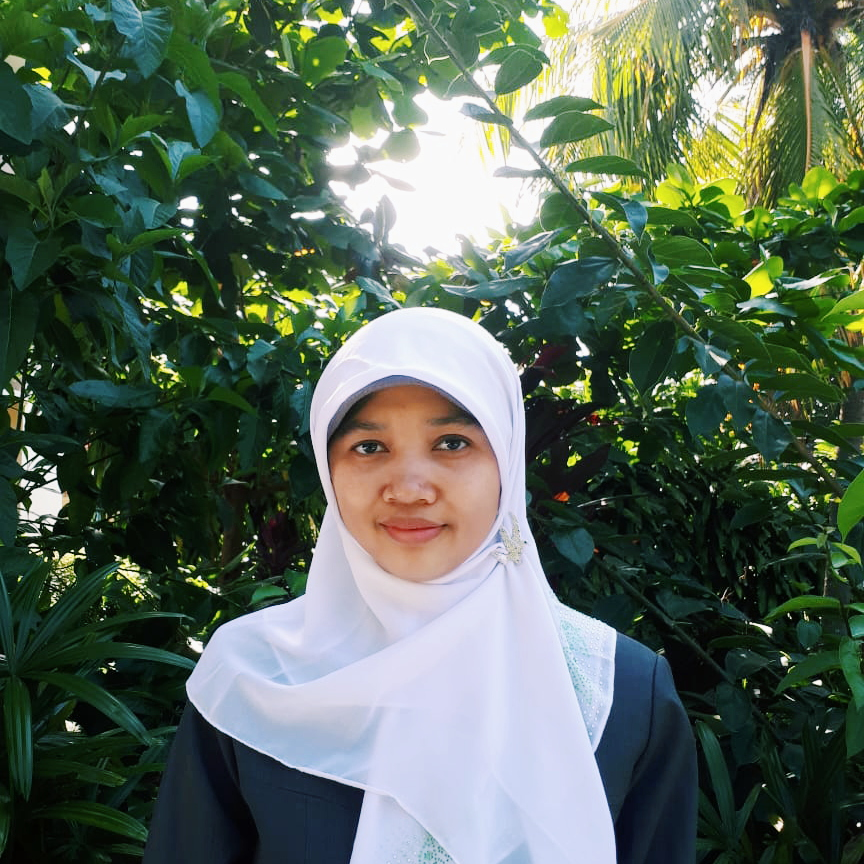

Dosen Program Studi Sistem Informasi Kelautan (SIK) Universitas Pendidikan Indonesia (UPI) terdiri dari dosen-dosen muda yang professional di bidang Ilmu Kelautan, Perikanan, Sistem Informasi Geografis, Pengindraan Jauh, Oseanografi, Konservasi, Sistem Informasi, Biologi Laut, Ekologi Laut. Sosial Ekonomi, Biosistematika, Mitigasi Bencana, dan bidang lainnya. Dosen Program Studi SIK merupakan lulusan dari universitas ternama seperti, Universitas Indonesia (UI), Institut Teknologi Bandung (ITB), Institut Pertanian Bogor (IPB).
Program studi Sistem Informasi Kelautan juga didukung dengan dosen – dosen yang berkualitas dan berpengalaman dari UPI Kampus Serang dalam bidang Bahasa Inggris, Statistika, Matematika dan sebagainya. Perkuliahan juga melibatkan kerjasama dengan stakeholder yang terkait serta praktisi dalam bidang system informasi dan kelautan.
NIP. 197811042010122001

Novi Sofia Fitriasari
S.Si. - Universitas Padjadjaran (2007)
M.T. - Institut Teknologi Bandung (2010)
NIPTT. 020190219941209201
Ayang Armelita Rosalia
S.Pi. - Institut Pertanian Bogor (2016)
M.Si. - Institut Pertanian Bogor (2018)
NIPTT. 020190219950428201

Della Ayu Lestari
S.Si. - Universitas Indonesia (2017)
M.Si. - Universitas Indonesia (2018)
NIPTT. 020190219911202201

Luthfi Anzani
S.Pd. - Universitas Negeri Jakarta (2014)
M.Si. - Institut Pertanian Bogor (2018)
NIPT. 920200819940415101
Wildan Aprizal Arifin
S.Pd.Universitas Pendidikan Indonesia (2016)
M.Kom. - Institut Pertanian Bogor (2019)
NIPT. 920200819940117102
Ishak Ariawan
S.Pd. - Universitas Negeri Makasar (2015)
M.Kom. - Institut Pertanian Bogor (2019)
NIPT. 920200819900404101
La Ode Alam Minsaris
S.Pi. - Universitas Halu Oleo (2015)
M.Si. - Institut Pertanian Bogor (2019)